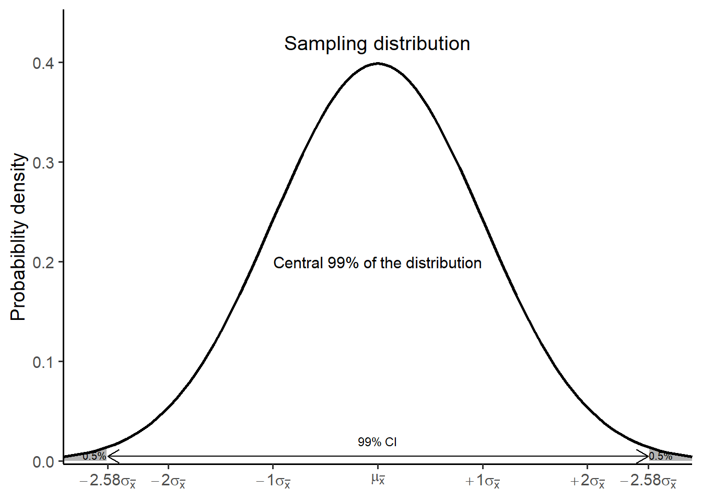

18 Confidence intervals
Obtaining an exact point estimate of the population parameter from just one random sample is almost unattainable. However, interval estimation allows us to provide a range of values where the parameter is expected to fall with a certain level of confidence. This can be achieved by constructing confidence intervals.
18.1 Confidence interval for mean
Constructing a confidence interval
We will base the construction of a confidence interval on two key concepts:
The interval is around the point estimate, which represents our best estimate of the population parameter.
The standard error (SE) is utilized to quantify the extent of variability around the point estimate.
According to the Central Limit Theorem, the sampling distribution of the mean approaches a normal distribution (Chapter 17). Furthermore, the standard deviation of this sampling distribution is the standard error of the mean, \(\sigma_{\bar{x}}\). Consequently, it can be inferred that approximately 95% of the distribution of sample means lies within \(\pm 1.96 \sigma_{\bar{x}}\) from the point estimate (the empirical rule; Chapter 15).
In this case, the formula for the confidence interval (CI) of mean equals:
\[ 95\%CI=\mu_{\bar{x}} \ \pm 1.96 \ \sigma_{\bar{x}} = \mu_{\bar{x}} \ \pm 1.96 \frac{\sigma}{\sqrt{n}} \tag{18.1}\]
When the sample size n is sufficiently large, the sample mean provides a good estimate of the population mean. Additionally, if the population standard deviation σ is unknown, we can estimate it by using the sample standard deviation s, and the formula becomes:
\[ 95\%CI=\bar{x} \ \pm 1.96 \ SE_{\bar{x}} = \bar{x} \ \pm 1.96 \frac{s}{\sqrt{n}} \tag{18.2}\]
Example
The serum creatinine of a sample of 121 elderly men has a mean of 1.15 mg/dl with a standard deviation of 0.3 mg/dl. The 95% confidence interval for the mean creatinine of this population is calculated as follows:
Lower limit of 95% CI
\(LL = 1.15 \ - 1.96 \frac{0.3}{\sqrt{121}} = 1.15 \ - 1.96 \frac{0.3}{11} = 1.15 \ - 0.0534 = 1.096\)
Upper limit of 95% CI
\(UL = 1.15 \ + 1.96 \frac{0.3}{\sqrt{121}} = 1.15 \ + 1.96 \frac{0.3}{11} = 1.15 \ + 0.0534 = 1.203\)
We are 95% confident that the mean serum creatinine is between 1.1 mg/dl and 1.2 mg/dl.
In R:
For a 95% confidence interval, each of the grey areas in Figure 19.1 equals 2.5% of the distribution because the total percentage of 5% (100-95) is equally divided between both sides of the normal distribution.
Confidence level
However, there is no particular reason for choosing 95% other than convention, and confidence levels of 90% or 99% are sometimes used. For example, the 99% confidence interval for the mean creatinine is \(\pm 2.58 \sigma_{\bar{x}}\) from the point estimate (the empirical rule; Chapter 15).

Now, each of the grey areas in Figure 19.2 equals 0.5% of the distribution because the total percentage of 1% (100-99) is equally divided between both sides of the normal distribution. Therefore:
z2 <- qnorm(0.005, lower.tail = FALSE)
# compute lower limit of 95% CI
lower_99CI <- mean - z2*(s/sqrt(n))
lower_99CI
# compute upper limit of 95% CI
upper_99CI <- mean + z2*(s/sqrt(n))
upper_99CI[1] 1.07975
[1] 1.22025We observe that a 99% CI (1.07-1.22) is wider compared to the 95% CI (1.09-1.20). This wider range reflects the greater certainty (99%) of capturing the population parameter. Nonetheless, this increased level of confidence comes at the expense of precision, especially with smaller datasets.
Understanding the condidence interval
The intuitive meaning of “confidence” in a confidence interval might not be immediately clear. To understand what confidence truly represents, let’s consider once more the example of a population consisting of 100,000 adults, with a mean blood pressure (BP) of μ = 126 mmHg and a standard deviation of σ = 10.
Next, we generate 100 random samples of size 10 from our population distribution and we construct a 95% confidence interval for each sample.
In Figure 18.4, each steel blue colored horizontal bar is a confidence interval (CI), centered on a sample mean (point). The intervals all have the same length, but are centered on different sample means as a result of random sampling from the population. The five red confidence intervals do not cover the population mean (the vertical dashed line; \(\mu\) = 126 mmHg). This aligns with our expectations under a 95% confidence level, where roughly 95% of the intervals should include the population parameter.
Sample size and condidence interval
Next, we construct the 95% confidence intervals of 100 randomly generated samples of size 50 from our population (Figure 18.5):
Comparing the Figure 18.4 and Figure 18.5, we notice two key trends as the sample size increases from 10 to 50:
- The sample statistic (points) gets closer to the population parameter (black dashed line).
- The uncertainty around the estimate shrinks (confidence intervals become narrower).
A confidence interval is typically expressed as a percentage (e.g., 90%, 95%, 99% CI) and reflects the proportion of intervals, constructed from repeated samples, that would contain the population parameter.
Choosing an appropriate confidence level and sample size depend on the specific needs of the analysis and the trade-offs between certainty and precision.
18.2 Confidence interval for proportion (normal approximation method)
Let X be a random variable of the observed number of individuals in the sample with a binary characteristic (e.g., having a disease). Our best estimate of the population proportion, p, is given by the sample proportion \(\hat{p} = \frac{X}{n}\), where n is the sample size. If we were to repeatedly draw samples of size n from our population and visualize the sample proportions \(\hat{p_1} = \frac{X_1}{n}\), \(\hat{p_2} = \frac{X_2}{n}\), \(\hat{p_3} = \frac{X_3}{n}\) and so forth with a histogram, then, under the condition that the sample size is sufficiently large and satisfies \(min(np, n(1-p)) \geq 5\), the sampling distribution of the proportion would approximate a normal distribution, \(N(\mu_{\hat{p}} = p, \sigma_{\hat{p}}^2 = \frac{p(1-p)}{n})\).
Similar to a confidence interval for the mean Equation 18.1, a confidence interval for a proportion can be constructed as follows:
\[ 95\%CI= \mu_{\hat{p}} \ \pm 1.96 \ \sigma_{\hat{p}} = p \ \pm 1.96 \sqrt{\frac{p(1- p)}{n}} \tag{18.3}\]
and when the p and \(\sigma_{\hat{p}}\) are unknown:
\[ 95\%CI= \hat{p} \ \pm 1.96 \ SE_{\hat{p}} = \hat{p} \ \pm 1.96 \sqrt{\frac{\hat{p}(1-\hat{p})}{n}} \tag{18.4}\]
where the standard error for proportion is \(SE_{\hat{p}} = \sqrt{\frac{\hat{p}(1-\hat{p})}{n}}\).
Example
Suppose a pulmonologist chooses a random sample of 317 patients from the patient register, and finds that 34 of them have a history of suffering from chronic obstructive pulmonary disease (COPD). The 95% confidence interval for the proportion of COPD is calculated as follows:
\(\hat{p} = \frac{X}{n} = \frac{34}{317}=0.107 \ or \ 10.7\%\)
Additionally, the condition \(min(np, n(1-p)) \geq 5\) is satisfied:
np = 317 * 0.107 = 33.9 > 5
n(1-p) = 317 * (1 - 0.107) = 317 * 0.893 = 283 > 5
Lower limit of 95% CI
\(LL = 0.107 \ - 1.96 \sqrt{\frac{0.107(1-0.107)}{317}} = 0.107 \ - 0.034 = 0.073 \ or \ 7.3\%\)
Upper limit of 95% CI
\(UL = 0.107 \ + 1.96 \sqrt{\frac{0.107(1-0.107)}{317}} = 0.107 \ + 0.034 = 0.141 \ or \ 14.1\%\)
Based on our random sample, we are 95% confident that the percentage of patients with COPD falls within the range of 7.3% to 14.1%.
In R: